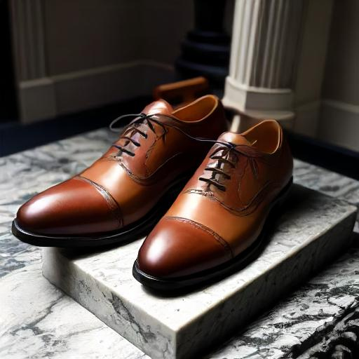
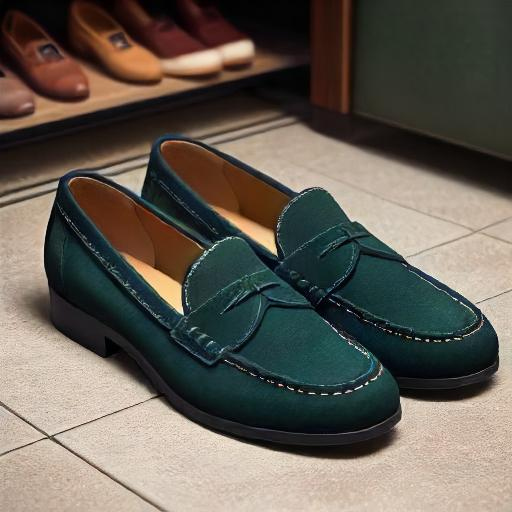

Suede is an interesting material. It is mused in shoes, and is made from cows just like traditional leather. But it is not nearly as commonplace as leather. Why could that be?
One reason (among many I am sure) is that Suede takes work. Leather is naturally resitant to the effects of the elements. It is effected, but not drastically by changes in temperature. It can shrug off water in a pinch and if you get some mud on it, a simple paper towel can wipe it straight off.
Compare this to Suede. A temperamental material. Single drops of water can have disastrous effects on the state of the material. It takes work to clean. It takes work to protect the shoes from damage. It takes an awareness that is uncommon, and undesirable in individuals today.
Why then did I choose suede? Because it's unique. It stands out as a bold difference in an otherwise bleak and neutral world. And work? Nothing worth doing was ever easy. I try to live my life like I wear my shoes. Boldly. Working hard to live worthy of the unique blessing granted to me. Blessings contingent upon my dedication to work.
Why Suede? Because it is hard.
 